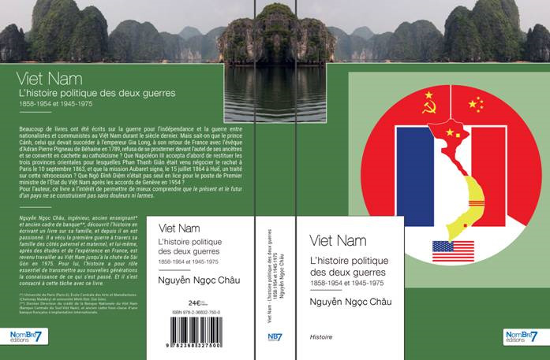
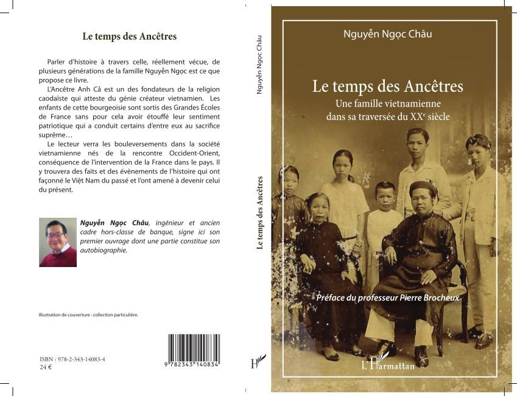

.
10/04/2020
Nous vous informons de la publication du second ouvrage de Monsieur
Chau Nguyen Ngoc, adhérent à l’Aris,
que vous pourrez trouver sur les sites de vente de livres classiques comme
Amazon,
Fnac, etc...
Le titre est
"Viet Nam - L'histoire politique des deux guerres 1858-1954 et 1945-1975", il fait 460 pages.
Note de l'auteur:
Je remercie tout particulièrement le professeur Nguyễn Thế Anh dont les précieux conseils m’ont aidé à réaliser ce livre.
Je dédie celui-ci à tous ceux qui s’intéressent au Việt Nam, et en particulier à ceux qui ont du sang vietnamien dans les veines, que la connaissance du passé de leur patrie, ou de la patrie de leurs ancêtres, leur permet de mieux comprendre que le présent et le futur d’un pays ne se construisent pas sans douleurs ni larmes."
Début de l'Introduction:
" Pour Robert A Heinlein,
« une génération qui ignore l’histoire n’a pas de passé – ni de futur ».
Le rôle essentiel de l’histoire est de transmettre, aux nouvelles générations, la connaissance des événements passés. Et, parce qu’il y a transmission, il y a devoir de mémoire, et donc un résumé trop bref de l’histoire ne saurait pas suffire.
Dans ce livre, qui retrace les deux grandes guerres vécues par le Việt Nam de 1858 à 1975, les exposés sont donnés avec, autant que possible, des détails référencés, qui permettent de cerner au plus près ce qui est réellement arrivé. L'historien Lê Thành Khôi n’avait-il pas écrit – dans l'avant-propos de son ouvrage
Le Viet Nam, Histoire et Civilisations, Le milieu et l'histoire – que la tâche de l'histoire
« n'est pas de juger, mais d'expliquer et de comprendre » ? "

Premier Ouvrage de l'Auteur:
